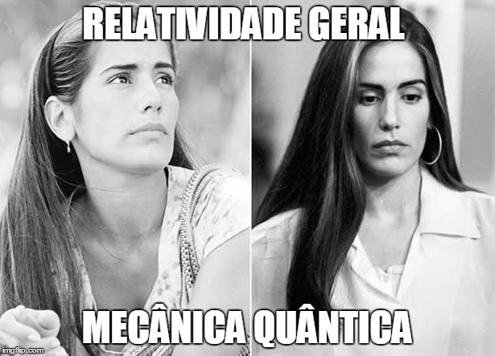

Já parou para pensar que a realidade a sua volta pode não ser muito… Real? Parece roteiro de filme do Christopher Nolan, mas a verdade é que há uma teoria da física que prevê exatamente isso.
Segundo o físico italiano Carlo Rovelli, a teoria da gravidade quântica em loop reconhece que nós precisamos mudar nossa noção de tempo e espaço para entender a física dos primórdios do Universo e de dentro dos buracos negros. Ou seja, os conceitos de tempo e espaço simplesmente não existem para esta teoria. E é por isso que ela é uma das ideias mais interessantes da física.
No livro A Realidade Não é o que Parece (Objetiva), Rovelli se dedica a informar os leitores de modo simples e didático todos os aspectos deste conceito que parece absurdo, mas que ganha cada vez mais relevância dentro da comunidade científica.
Para entender a gravidade quântica em loop, primeiro, é preciso entender as desavenças entre a relatividade geral e a mecânica quântica — pode chamar de Ruth e Raquel, se preferir. A primeira, proposta por Einstein, diz respeito aos corpos gigantescos do Universo, como estrelas e planetas.
A segunda, é a base da física nuclear, ou seja, é a física que explica corpos muito, muito pequenos, partículas menores do que prótons e elétrons. Este campo possui propriedades que não estão presentes na teoria de Einstein, a relatividade geral. Mesmo assim, tanto o conceito do físico alemão quanto a mecânica quântica parecem terrivelmente certos.
No livro, Rovelli cita uma antiga piada: “A natureza está se comportando conosco como aquele rabino idoso consultado por dois homens para resolver uma disputa. Depois de ouvir o primeiro, o rabino disse: ‘Você tem razão’. O segundo insistiu para ser ouvido. O rabino escutou e lhe disse: ‘Você também tem razão’. Então a mulher do rabino, que escutava a conversa de outra sala, gritou: ‘Mas os dois não podem ter razão ao mesmo tempo’. O rabino pensou um pouco, concordou e concluiu: ‘Você também está certa’”.
É como se a natureza tivesse duas explicações diferentes para seu funcionamento. Mas os cientistas sabem que uma das duas deve estar errada — pelo menos da forma como as entendemos hoje. Logo, se a física do século 20 pudesse ser resumida em um emoji, seria este: ¯\_(ツ)_/¯
A questão é que cientistas são atraídos por teorias elegantes, ou seja, simples e funcionais. E essa falta de compatibilidade entre as duas maiores teorias da física deixa a comunidade científica com o cabelo mais em pé que o de Einstein.
Várias estudiosos tentaram resolver o problema ao longo dos anos. A busca por uma teoria única que junte estes dois campos de estudo é o sonho de qualquer cientista. Sim, estamos falando da Teoria de Tudo. E é aí que surge a Teoria das Cordas, como uma proposta para unificar as gêmeas briguentas da física teórica.
Mas, enquanto os teóricos das cordas acreditam que o mundo quântico é formado por minúsculos filamentos de energia (as cordas), os cientistas que defendem a ideia da gravidade quântica em loop sequer acreditam que haja um mundo infinitamente pequeno que comporte estas cordas. São ideias tão antagônicas que rendeu até briga em The Big Bang Theory (ative as legendas e veja o vídeo).
Diferente de sua rival, a teoria da gravidade quântica em loop nem tem a pretensão de ser uma Teoria de Tudo. “Acho que estamos bem longe disso porque ainda precisamos compreender muita coisa sobre o Universo”, disse Rovelli à GALILEU. “A gravidade quântica em loop é ‘apenas’ uma teoria que busca entender o Big Bang e o interior dos buracos negros. Eu ficaria bem feliz se entendesse ‘apenas’ isso.”
Vale lembrar que nem a Teoria das Cordas, nem a gravidade quântica em loop têm comprovação em laboratório. Por isso, são apenas sugestões de visão de mundo. Neste cabo de guerra da física teórica, cada uma tenta juntar as evidências que pode já que ainda não existe tecnologia capaz de fazer um tira-teima.
Você pode ler mais sobre a Teoria das Cordas e, depois de terminar este texto, decidir qual das teorias faz mais sentido para você. (Leia também a entrevista com o especialista Cumrun Vafa, da Universidade Harvard.)
Esta tensão entre os dois tipos de física não existe na teoria da gravidade quântica em loop porque, no fim, as duas conversam entre si. Rovelli explica: “A gravidade quântica em loop combina relatividade geral e mecânica quântica com muito cuidado, porque não utiliza nenhuma outra hipótese a não ser essas duas teorias, oportunamente reescritas para se tornarem compatíveis. Mas suas consequências são radicais”.
Com a relatividade geral, aprendemos que o espaço não é mais uma caixa rígida e inerte, como um recipiente em que você joga suas coisas. Ele é mais parecido com o campo eletromagnético (por onde se propagam coisas como as ondas de rádio ou a luz que chega aos nosso olhos, que também é onda): um imenso molusco imóvel em que estamos imersos, um molusco que se comprime e se retorce, como escreveu Rovelli.
Já a mecânica quântica nos ensina que campos como este são feitos de “quanta”. Isso quer dizer que o espaço seria formado por pequenos pacotinhos, como os fótons que formam a luz – a isso damos o nome de estrutura granular. A diferença entre os fótons e os pacotinhos de espaço, ou “quanta de espaço” (para dar um nome chique), é que, enquanto os fótons vivem no espaço, os pacotinhos de espaço são eles próprios o espaço. Doido, né?
Ou como Rovelli explica no livro: “O espaço como recipiente amorfo das coisas desaparece da física com a gravidade quântica. As coisas (os quanta) não habitam o espaço, habitam uma os arredores da outra, e o espaço é o tecido de suas relações de vizinhança.“
Assim, entende-se que, em uma escala muito, muito pequena, o espaço não é mais algo contínuo, ele tem um limite, que é o limite dos pacotinhos que o formam. E essa é um dos pilares da teoria da gravidade quântica em loop.
Outro ponto crucial da teoria é a forma como entendemos o tempo. E, se precisamos abandonar a ideia de que o espaço é um “recipiente que contém as coisas”, também precisamos parar de ver o tempo como uma linha na qual as coisas fluem. Aqui, em uma escala minúscula, o tempo não é uma sucessão de acontecimentos formados por passado, presente e futuro.
Einstein já havia sugerido que o tempo e o espaço formam um todo único. E deu a isso o criativo nome de “espaço-tempo”. Ou seja, não podemos vê-los como coisas separadas. E as teorias do físico alemão também só ajudam a reforçar que o que entendemos por tempo é bastante limitado.
Segundo esta ideia, é errado, por exemplo, pensar que o tempo é o mesmo em todos os lugares. Ele não é. Um relógio que está sob um móvel não vai marcar o mesmo horário de um outro que esteja sob o chão, assim como o tempo de quem está na praia é diferente daquele de quem não está em uma cidade litorânea. Isso porque quando mais próximo da Terra, onde a gravidade é mais intensa, mais devagar o tempo passa.
Nossos relógios de pulso e celulares não são capazes de perceber essa diferença de infinitésimas frações de segundo, mas instrumentos mais precisos de laboratório são.
Rovelli explica que, para entendermos a teoria da gravidade quântica, não devemos pensar que exista um gigantesco relógio cósmico que marque o tempo do Universo. Pense em um recorte de tempo como o “ano”, por exemplo. Um ano nada mais é do que o período de tempo em que a Terra dá uma volta em torno do Sol. Ou seja, o “ano” é uma medida que só faz sentido para os terráqueos.Possíveis alienígenas que vivessem em Plutão não teriam a mesma ideia de ano que nós, já que o “ano” lá corresponde a 248 anos na Terra. Eles seriam obrigados a inventar uma outra forma de comemorar aniversários ou de organizar a previdência. Assim, é possível perceber que o nosso conceito de tempo nada mais é do que uma espécie de “acordo”, uma convenção que pouco tem a ver com as leis do Universo como um todo.
Aprendemos com Einstein, há mais de um século, que cada objeto do Universo possui um tempo próprio. Se na Terra, em altitudes diferentes, o tempo já muda, imagina em Marte ou em Proxima B. É isso mesmo o que você está pensando, fã de Interestelar, foi exatamente essa ideia que permitiu com que Matthew McConaughey ficasse mais novo do que a própria filha.
Antes do alemão, o próprio Newton já havia afirmado que não podíamos medir o “verdadeiro” tempo, mas, se assumíssemos sua existência, teríamos uma forma eficaz de descrever vários fenômenos da natureza. De fato. O problema é que em uma escala muito pequena, uma escala quântica, o tempo como o conhecemos não funciona.
“Trata-se de uma mudança simples, mas, de um ponto de vista conceitual, o salto é grande. Temos de aprender a pensar o mundo não como algo que muda no tempo, mas de alguma outra maneira. As coisas mudam apenas uma em relação a outra. No nível fundamental, o tempo não existe”, escreveu Rovelli.
Resumindo: o espaço é um campo e o tempo nasce dos processos desse mesmo campo. Logo, o Universo inteiro seria formado por campos quânticos. E estes campos quânticos não viveriam no espaço-tempo, já que eles seriam o próprio espaço-tempo, ou seja, tudo o que nos cerca seria formado por campo sobre campo.
A estes campos que vivem sobre si mesmos sem a necessidade de um “suporte” damos o nome de “campos quânticos covariantes”. O nome é assustador, mas a ideia é bem simples. “A substância de que é feito o mundo simplificou bastante nestes últimos anos. O mundo, as partículas, a energia, o espaço e o tempo, tudo isso é apenas a manifestação de um único tipo de entidade: os campos quânticos covariantes.”
A ideia fica mais clara quando a comparamos com a luz, que é formada por fótons e ondas. Se você se afastar o suficiente de um punhado de fótons vai conseguir enxergar as ondas. Ou seja, os fótons são a maneira como as ondas interagem.
Da mesma forma, o espaço e o tempo seriam formados por quantas de gravidade. Como os fótons que permitem a interação entre as ondas de luz, os quanta de gravidade possibilitam a interação entre espaço e tempo.
Basta olhar para si mesmo. O que forma os seres humanos? Um braço? Uma célula? Um átomo? Não. O que forma um ser humano é o conjunto de todas estas coisas. Se você se afastar o suficiente de uma molécula do corpo humano vai poder ter uma visão geral do humano que ela forma.
Como coloca Rovelli: “Pense nas montanhas. Onde ela começa? Onde ela termina? Quanto ela continua sob a terra? São perguntas sem sentidos, porque uma montanha não é um objeto em si, é só uma maneira que temos de dividir o mundo para falar dele mais facilmente. Seus limites são arbitrários, convencionais, cômodos. São maneiras de organizar a informação que dispomos, ou melhor, formas da informação que dispomos”.
Tudo bem, é complexo, mas não é difícil. Segundo Rovelli, o preço conceitual pago para entender a teoria da gravidade quântica em loop é a renúncia à ideia de espaço e tempo como estruturas gerais para enquadrar o mundo. Ninguém pode chegar para você, dizer esse absurdo e fingir que não aconteceu nada. Aconteceu, sim.
Talvez, a dificuldade em entender o conceito se deva ao fato de que é praticamente impossível pensar em um mundo sem tempo e sem espaço. Isso porque essa ideia coloca em risco a própria realidade a nossa volta — daí para o niilismo de Nietzsche é um pulo. Mas, como alertou o físico italiano, “compreender o mundo muitas vezes significa contrariar a nossa própria intuição”.
Tire alguns segundos para refletir sobre o que você acabou de ler e assimilar o assunto. Ninguém vai te culpar.
No fim, uma das maiores contribuições da gravidade quântica em loop é a nova forma de visão de mundo que ela oferece. Por definir que existe um limite para o espaço e o tempo, a tensão entre Ruth e Raquel, quer dizer, entre a relatividade geral e a mecânica quântica não existe mais.
Não precisamos tentar entender o que se passa em um universo infinitamente pequeno, em que as leis de Einstein não fazem sentido, porque simplesmente não existe um universo infinitamente pequeno, ele tem um limite: os quanta de gravidade. Ao eliminar essa ideia de espaço contínuo, conseguimos encaixar as peças.
Ninguém sai ileso de uma surra de física quântica. Mas é preciso deixar isso muito claro na mente: a teoria da gravidade quântica em loop — assim como a Teoria das Cordas — não passa de uma tentativa de explicar o mundo. Como vários conceitos clássicos da ciência, esta é só uma proposta sem comprovação em laboratório. Mas nem por isso tem menos valor.
Até as ondas gravitacionais serem confirmadas em 2016, por exemplo, elas também não passavam de uma hipótese de Einstein. A mesma coisa aconteceu com o bóson de Higgs e as ondas eletromagnéticas.
Ou seja, não é porque se trata de uma ideia sem comprovação que não devemos dar bola para ela. Tem sempre a chance de que o problema seja dos seres humanos (e de sua incapacidade tecnológica), não da teoria.
"Na física, nós não conseguimos provar de fato uma teoria, o que fazemos é excluir teorias alternativas. De qualquer forma, você pode pesquisar mais e descobrir que aquela teoria que julgavam ser fundamental tem estruturas mais fundamentais ainda. Então, não podemos afirmar que nenhuma teoria da física é absolutamente correta (ou incorreta) porque não temos acesso a todos os níveis de informação", afirmou a física teórica Lisa Randall, da Universidade Harvard, em uma conferência.
Com esta teoria da física, ironicamente, ganhamos uma maneira mais filosófica de ver o mundo, já que vem da filosofia essa ideia de deixar de ver o espaço como um “recipiente”. “Quanto mais aprendemos de forma interdisciplinar, melhor compreendemos as coisas. Einstein lia muita filosofia; Kant, Milton e Borges foram muito influenciados pela física... Manter a educação separada nos faz mais ignorantes”, diz Rovelli à GALILEU.
Talvez, a questão mais interessante da ciência seja a de que quanto mais desvendamos o mundo, mais descobrimos coisas a desvendar. Parafraseando o italiano, a única coisa realmente infinita no Universo é a nossa ignorância.